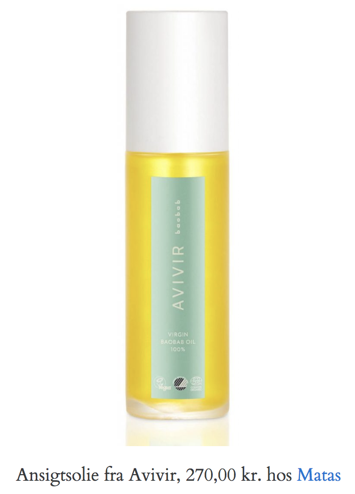
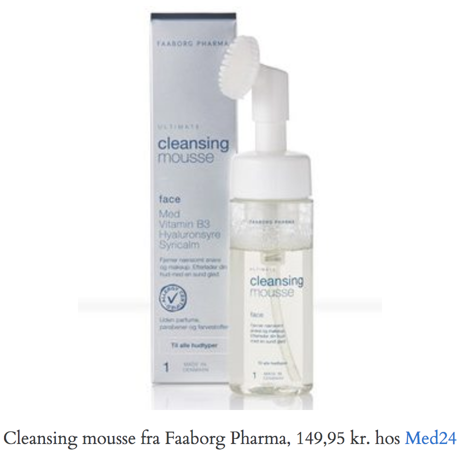

Forside Skønhed Kosmetologens bedste tips til vinterhud

Din hud er ikke fan af vinter, frost og kulde. Heldigvis kommer kosmetologen dig til undsætning med gode råd, som kan hjælpe dig med at undgå en tør og skadet vinterhud.
Noget af det allervigtigste for din hud om vinteren er, at du undgår produkter med vand i. Indeholder dine produkter vand, kan du risikere, at produktet fryser, når du går ud i kulden, og det kan ende med, at give dig karsprængninger.
Selvom du bruger en dagcreme hver morgen, så kan din hud godt have brug for mere fugt i løbet af dagen. Og især når det er koldt, kan huden godt hungre efter ekstra fugt. Her er en ansigtsolie god, da den fugter ekstra meget, og det vil din vinterhud blive glad for, efter du har været ude i kulden. Avivir har netop lanceret en ny produktserie med baobab, og her er ansigtsolien et godt bud.
Efter en kold dag så er eksfoliering nok ikke det, du har allermest lyst til. Men det skal altså gøres! Her er det vigtigt, at du om vinteren bruger en eksfoliering, som er mildere end den, du bruger om sommeren. Du skal eksfoliere din hud en til to gange om ugen men husk, at du skal fugte din hud efterfølgende med en god fugtighedsmaske. Ansigtsscruben fra Ecooking er helt perfekt til vinterhud, da den består af sheabutter, mandel- og solsikkeolie samt små fine korn af mandelkerner.
Selvom det er koldt, kan solens stråler sagtens påvirke din vinterhud alligevel. Så det er vigtigt, at du bruger solfaktor. Det kan være, du har en dagcreme med solfaktor i, og ellers kan en almindelig solcreme til ansigtet også bruges. Husk – gerne så høj faktor som muligt. Hellere for meget end for lidt!
Om vinteren har din hud virkelig brug for omega-3. Sørg for at spise godt med fisk, omega-3-tabletter eller omega-3-olier, som kan købes i de fleste helsekostforretninger. Fedtstofferne som findes i omega-3 er med til at danne nye hudceller samtidig med, at de beskytter og plejer huden.
Du skal rense din hud morgen og aften, men om vinteren er det vigtigt, at produkterne er mildere end normalt. Du skal altså bruge et renseprodukt, som renser, uden at udtørre din vinterhud. Cleansing moussen fra Faaborg Pharma er mild, og er samtidig super praktisk med børstehovedet.
Mange glemmer at pleje deres læber og negle. Men begge dele er ekstra udsat om vinteren, så husk dem nu! Hvis du ikke plejer dem, så kan du risikere, at dine læber sprækker, og at dine negle knækker. Dine læber elsker en god læbepomade som fugter og plejer, og som samtidig har solfaktor i. Plej dine negle dagligt med en lækker negleolie. Hvis du er typen, som ikke kan lide hverken læbepomade eller negleolie og føler, at det hele klistrer og fedter, så gør det om aftenen, inden du går i seng. Så er du ikke generet af det på samme måde.